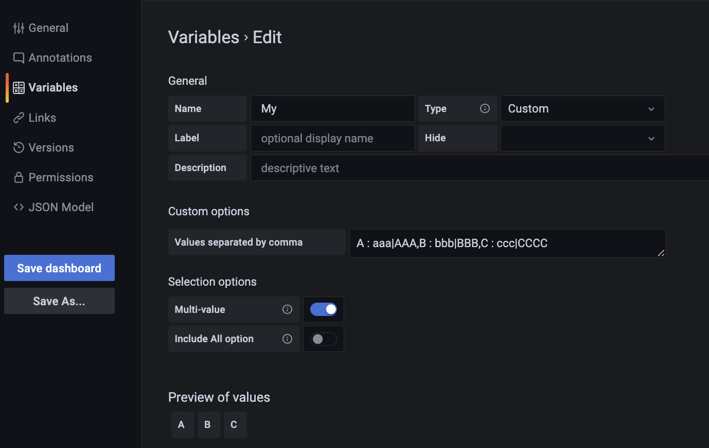

Linux: Grafana可视化
- TAGS: Linux
添加变量
全局变量
- https://grafana.com/docs/grafana/latest/dashboards/variables/add-template-variables/#global-variables
- https://grafana.org.cn/docs/grafana/latest/dashboards/variables/
$__dashboard #当前仪表板的名称 $__from and $__to #时间戳。 &from=${__from}&to=${__to} 或from=now-24h&to=now $__interval #Grafana 自动计算一个间隔 $__interval_ms #以毫秒为单位的$__interval变量 $__name #仅在 Singlestat 面板中可用 $__org #当前组织的 ID $__user #${__user.id} ${__user.login} ${__user.email} $__range #通过to - from计算的. 它有一个毫秒和一个秒表示，称为$__range_ms和$__range_s $__rate_interval #仅支持 Prometheus 数据源. 用于速率函数 $__rate_interval_ms #以毫秒为单位的$__rate_interval变量 $timeFilter or $__timeFilter #以表达式的形式返回当前选定的时间范围.例如，时间范围间隔Last 7 days表达式为time > now() - 7d $__timezone #当前选择的时区
自定义时间范围
${__from} 1594671549254
${__from:date} 2020-07-13T20:19:09.254Z
${__from:date:iso} 2020-07-13T20:19:09.254Z
${__from:date:seconds} 1594671549
${__from:date:YYYY-MM} 2020-07
范例
/d/$clusterUid-k8s-deploy/kubernetes-deployment?\ orgId=$__org&var-namespace=default&var-name=${deployment}\ &from=${__from}&to=${__to}&showTitle&kiosk=$__kiosk
隐藏常量
如果你的面板uid设置的571136-k8s-overview，统一有571136前缀，那么可以添加一个隐藏常量 clusterUid值为571136 方便调用。
- Variable type: Constant
- Name: clusterUid
- Value: 571136
https://a/d/$clusterUid-k8s-overview/
自定义
- 变量类型：自定义
- 名称：My
自定义选项: 以逗号分隔的值. 如 1, 10, mykey : myvalue, myvalue, escaped\,value
例： '
A : aaa|AAA,B : bbb|BBB,C : ccc|CCCC'
数据链接变量
- https://grafana.com/docs/grafana/latest/panels-visualizations/configure-data-links/
- https://grafana.org.cn/docs/grafana/latest/panels-visualizations/configure-data-links/
数据链接中的变量可让您将人们发送到带有保留数据过滤器的详细仪表板。例如，您可以使用变量来指定标签、时间范围、系列或变量选择。
在Data link面板使用$来补全显示所有可用变量
__url_time_range #当前仪表板的时间范围。 例如， ?from=now-6h&to=now __series.name #查询页面下Options中Legend取值 __field.name #指标名称 __field.labels.<LABEL> #指标的标签 __value.numeric #指标的值 __data.fields.name #表格字段。或者 __data.fields["NameOfField"]
范例
/d/$clusterUid-k8s-deploy/kubernetes-deployment?orgId=$__org&var-namespace=default&var-name=${__series.name}&${__url_time_range} #Table图表中Namespace字段取值 # 1 - 按字段合并 pod # 2 - 按名称组织字段 namespace改为Namespace /d/$clusterUid-k8s-namespace/k8s-namespace?var-Namespace=${__data.fields.Namespace}&kiosk=$__kiosk&showTitle
注意：直接在 Data Link 的 URL 中对变量进行数学运算目前不被支持
查询语法引用变量
编辑查询页面下Options选项，Legend 用来覆盖查询结果标签，{{xxx}} 引用某个标签名称
变量语法
如 编辑 Variables，
- Variable type: Custom
- Name: My
- Custom options: key1 : value1,key2 : value2
- 勾选可多选 Multi-value


value
Custom options: A : aaa|AAA,B : bbb|BBB,C : ccc|CCCC 执行 String to interpolate: '${My:value}' Interpolation result: '{aaa|AAA,bbb|BBB,ccc|CCC}' #不适合多选 表达式： sum(sum by(url, game, code) (rate(Fb_Net_Code_count{game=~".*",url=~".*(${My:value})",url!~".*\\.(png|jpg|jpeg|json)",prom_cluster="prod-eks-client"}[30s])))by (url) 解析后： 可以看到|分隔成 {aaa、AAA,bbb、ccc|CCCC} sum(sum by(url, game, code) (rate(Fb_Net_Code_count{game=~".*",url=~".*({aaa|AAA,bbb|BBB,ccc|CCCC})",url!~".*\\.(png|jpg|jpeg|json)",prom_cluster="prod-eks-client"}[30s])))by (url)
pip
Custom options: A : aaa|AAA,B : bbb|BBB,C : ccc|CCCC #执行 String to interpolate: '${My:pipe}' Interpolation result: 'aaa|AAA|bbb|BBB|ccc|CCC' 表达式： sum(sum by(url, game, code) (rate(Fb_Net_Code_count{game=~".*",url=~".*(${My:pipe})",url!~".*\\.(png|jpg|jpeg|json)",prom_cluster="prod-eks-client"}[30s])))by (url) 解析后： sum(sum by(url, game, code) (rate(Fb_Net_Code_count{game=~".*",url=~".*(aaa|AAA|bbb|BBB|ccc|CCCC)",url!~".*\\.(png|jpg|jpeg|json)",prom_cluster="prod-eks-client"}[30s])))by (url)